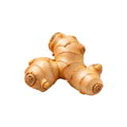

होम / अदरक

अदरक का भाव आज | Ginger Mandi Price Today
अदरक के आज के उपलब्ध मंडी भाव देखें—इंदौर, जालौर और पाटन के मॉडल, न्यूनतम और अधिकतम रेट और प्रति किलो भाव।
नीचे मंडी-वार सूची में अदरक के उपलब्ध भाव दिए हैं। मंडी के नाम पर क्लिक करके उस मंडी की दूसरी फसलों के भाव भी देख सकते हैं।
अदरक के भाव: प्रमुख मंडियां, किस्में और क्वालिटी, मूल्य चक्र और सोंठ का विकल्प
राम राम किसान भाइयों! भारतीय मसाला और सब्जी बाजार में अदरक (Ginger) एक ऐसी उच्च मूल्य वाली नकदी फसल है, जिसके भाव में आने वाली तेजी सीधे रसोई से लेकर थोक व्यापार तक हलचल मचा देती है। दैनिक खान-पान, मसाला उद्योग, सर्दियों में चाय की खपत और आयुर्वेदिक औषधियों में व्यापक उपयोग के कारण अदरक की मांग पूरे साल बेहद मजबूत रहती है। महाराष्ट्र की प्रमुख मंडियों (कन्नड, लातूर, पुणे), मध्य प्रदेश की इंदौर मंडी से लेकर राजस्थान की उदयपुर और जयपुर (मुहाना) मंडी तक अदरक का थोक व्यापार हमेशा सक्रिय रहता है। किसान और व्यापारी भाई हमेशा यह जानने के लिए उत्सुक रहते हैं कि आज मंडियों में 1 किलो अदरक का रेट क्या है, अदरक का भाव कब बढ़ेगा और देश की बेंचमार्क मंडियों में क्या रुख चल रहा है।
महाराष्ट्र से राजस्थान-एमपी का कनेक्शन: कौन सी मंडियां तय करती हैं रुख?
अदरक एक ऐसा उत्पाद है जिसकी खेती कुछ खास भौगोलिक क्षेत्रों में अधिक होती है, लेकिन इसकी खपत पूरे देश में है। यही वजह है कि इसके भाव सीधे तौर पर प्रमुख उत्पादक केंद्रों से जुड़े होते हैं:
- कन्नड व छत्रपति संभाजीनगर (महाराष्ट्र): महाराष्ट्र का कन्नड (Kannad) इलाका देश में अदरक उत्पादन का सबसे बड़ा गढ़ माना जाता है। कन्नड और लातूर मंडी में अदरक का जो बाजार भाव (Adrak bhav today Latur) खुलता है, वही पूरे उत्तर भारत के लिए बेस रेट तय करता है।
- इंदौर मंडी (मध्य प्रदेश): मध्य भारत में इंदौर मंडी अदरक का सबसे बड़ा वितरण केंद्र (Re-distribution Hub) है। महाराष्ट्र और स्थानीय माल की आवक इंदौर मंडी में आने के बाद ही राजस्थान, उत्तर प्रदेश और गुजरात की मंडियों के लिए गाड़ियां रवाना होती हैं।
- उदयपुर और जयपुर मंडी (राजस्थान): राजस्थान में उदयपुर संभाग के आदिवासी अंचल में अदरक की स्थानीय पैदावार अच्छी होती है, जिसके चलते उदयपुर मंडी में स्थानीय और बाहरी दोनों तरह के माल का कड़ा मुकाबला रहता है। वहीं जयपुर की मुहाना मंडी में मुख्य रूप से महाराष्ट्र और बेंगलुरु से आने वाले धुले अदरक की बड़ी खेप बिकती है।
धुला हुआ (Washed) बनाम मिट्टी वाला अदरक
मंडी में व्यापारी केवल ढेरी का वजन नहीं देखते, बल्कि अदरक की बनावट, गांठ की मोटाई और सफाई के आधार पर उसका ग्रेड तय करते हैं:
- धुला हुआ अदरक: मशीनों में साफ पानी से धोकर चमक लाया गया अदरक बड़े शहरों और सुपरमार्केट्स की पहली पसंद होता है। इसमें मिट्टी नहीं होती, इसलिए व्यापारी इस पर ₹500 से ₹1,000 प्रति क्विंटल का अतिरिक्त प्रीमियम देते हैं।
- बिना धुला (मिट्टी वाला माल): खेत से सीधा निकला हुआ अदरक, जिसमें मिट्टी चिपकी होती है। इसमें वजन में मिट्टी का हिस्सा कटने और धोने के खर्च के चलते इसका भाव हमेशा कम आंका जाता है।
पुराना अदरक (Old Ginger) बनाम नया कच्चा अदरक
- पुराना परिपक्व अदरक: जब फसल पूरी तरह पक जाती है, तो उसमें रेशा मजबूत हो जाता है, तीखापन बढ़ जाता है और छिलका कड़क हो जाता है। यह अदरक लंबे समय तक सड़ता नहीं है। होटल, ढाबों और मसाला फैक्ट्रियों में इसी पुराने अदरक की सबसे ऊंची बोली लगती है।
- नया गीला अदरक: शुरुआती तुड़ाई में आने वाला नया अदरक बहुत नाजुक होता है। इसमें पानी की मात्रा अधिक होने से यह जल्दी सड़ने लगता है, इसलिए इसका भाव पुराने माल से 30% से 40% तक कम रहता है।
गांठ का आकार (बोल्ड / पंजा साइज)
अदरक का पंजा (हाथ की तरह फैली हुई गांठें) जितना बड़ा, गूदेदार और बिना दाग वाला होगा, वह 'सुपर बोल्ड' क्वालिटी में गिना जाएगा। टूटी हुई छोटी गांठें और पतले रेशे वाले अदरक को 'गोली/कटिंग' ग्रेड में डालकर सस्ते भाव में बेचा जाता है।
अदरक का मूल्य चक्र: भाव कब बढ़ता है और कब घटता है?
अदरक के भाव में सालभर भारी उतार-चढ़ाव देखने को मिलते हैं:
- मंदी का समय (जनवरी से अप्रैल): सर्दियों के अंत और बसंत ऋतु में महाराष्ट्र, कर्नाटक और मध्य प्रदेश के खेतों से नई फसल की मुख्य खुदाई होती है। मंडियों में एक साथ बंपर आवक होने के कारण इन महीनों में अदरक का थोक भाव साल के सबसे निचले स्तर पर पहुंच जाता है।
- तेजी और उछाल का दौर (जुलाई से नवंबर): मानसून के महीनों में बारिश के चलते खेतों से तुड़ाई रुक जाती है और ढुलाई में माल सड़ने का जोखिम बढ़ जाता है। साथ ही इसी दौरान नए सीजन के लिए किसान भाइयों द्वारा 'बीज के लिए अदरक' की जबरदस्त खरीद की जाती है। बीज की तगड़ी मांग, कम आवक और आगे सर्दियों में चाय व काढ़े की भारी घरेलू खपत मिलकर अदरक के भाव में जोरदार तेजी लाते हैं।
थोक मंडी भाव (क्विंटल) और 1 किलो के खुदरा रेट में इतना अंतर क्यों?
उपभोक्ताओं और किसान भाइयों के मन में यह सवाल अक्सर उठता है कि मंडी में अदरक ₹40 से ₹50 किलो (₹4,000-₹5,000 प्रति क्विंटल) बिका, तो शहर की दुकानों पर 1 किलो अदरक का रेट ₹90 से ₹120 तक क्यों पहुंच गया? इसके 3 मुख्य कारण हैं:
- सड़न और नमी का नुकसान (Weight Loss & Dripping): अदरक जमीन के नीचे उगने वाला कंद है। मंडी से फुटकर दुकान तक पहुंचने में धूप और हवा से इसका पानी सूखता है, जिससे 1 बोरी (60 किलो) में 3 से 5 किलो वजन घट जाता है। साथ ही कंद सड़न (Rotting) के कारण 5-7% माल फेंकना पड़ता है।
- धुलाई और ग्रेडिंग खर्च: मिट्टी वाले अदरक को पानी के फव्वारों या ड्रमों में धोकर साफ करने, सुखाने और छंटाई करने में लेबर खर्च जुड़ता है।
- लंबी दूरी का ट्रांसपोर्ट: महाराष्ट्र के कन्नड या लातूर से उत्तर भारत (राजस्थान, दिल्ली, पंजाब) तक ट्रकों का ठंडा व सुरक्षित परिवहन भाड़ा प्रति किलो लागत को सीधे बढ़ा देता है।
सूखा अदरक (सोंठ) का विकल्प: जब बाजार में मंदी हो
अदरक उत्पादक किसानों के लिए सबसे बड़ा फायदा यह है कि यह टमाटर की तरह तुरंत नष्ट होने वाली फसल नहीं है।
- यदि मंडियों में ताजे गीले अदरक का भाव बहुत गिर जाए, तो किसान भाई इसे औने-पौने दाम पर बेचने के बजाय सोंठ (Dry Ginger) बना सकते हैं।
- अच्छे पके हुए अदरक को छीलकर, चूने के पानी में उपचारित कर धूप में सुखाकर सोंठ तैयार की जाती है।
- सोंठ को सालों तक सुरक्षित रखा जा सकता है और जब आयुर्वेदिक दवा कंपनियों या मसाला मिलों में इसकी मांग निकलती है, तो यह कई गुना ऊंचे दामों में बिकती है।
मंडी में अदरक का सबसे ऊंचा भाव पाने के 4 व्यावहारिक टिप्स
- कंद सड़न (Soft Rot) वाले टुकड़े तुरंत अलग करें: बोरी या क्रेट में अगर एक भी सड़ा हुआ या बदबूदार अदरक का टुकड़ा रह गया, तो वह पूरी बोरी को गीला कर देगा। मंडी में ऐसा माल पहुंचते ही आढ़ती पूरे लॉट का भाव गिरा देते हैं।
- खेत से निकालने के बाद तुरंत पैक न करें: खुदाई के बाद अदरक को 1 दिन छायादार और हवादार जगह पर फैलाकर रखें ताकि उसकी ऊपरी अतिरिक्त नमी सूख जाए और छिलका बैठ जाए।
- कन्नड और इंदौर मंडी के रुख पर नजर रखें: राजस्थान और आसपास के किसान भाई अपनी स्थानीय मंडी (जैसे उदयपुर, कोटा या जयपुर) में माल ले जाने से पहले महाराष्ट्र और इंदौर की बड़ी मंडियों के दैनिक मॉडल भाव और आवक की जानकारी जरूर लें।
- जालीदार बोरियों (Mesh Bags) का उपयोग: अदरक को कभी भी प्लास्टिक के बंद कट्टों में न भरें। हवादार जाली वाली लाल बोरियों में माल पैक करने से अंदर हवा लगती रहती है और अदरक तरोताजा बना रहता है।
अदरक का दैनिक भाव और बाजार का रुख
अदरक का बाजार पूरी तरह मौसम, बीज की मांग और प्रमुख उत्पादक राज्यों की आवक पर टिका होता है। बाजार के सही उतार-चढ़ाव को समझकर और अपने माल की उचित छंटाई करके बिक्री करने से किसान भाई अपनी मेहनत का भरपूर और सबसे बेहतरीन दाम हासिल कर सकते हैं।